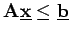

Inhalt Index DeskTop Bronstein

 Optimierung Nichtlineare Optimierung Gradientenverfahren für Probleme mit Ungleichungsrestriktionen Verfahren der zulässigen Richtungen
Optimierung Nichtlineare Optimierung Gradientenverfahren für Probleme mit Ungleichungsrestriktionen Verfahren der zulässigen Richtungen


Sind die Funktionen linear, d.h.  , dann kann ein einfacheres Richtungssuchprogramm aufgestellt werden:
, dann kann ein einfacheres Richtungssuchprogramm aufgestellt werden:
| (18.94) |
Die Wirkung der Wahl verschiedener Normen bzw. ist in der folgenden Abbildung gezeigt.
Die in einem gewissen Sinne beste Wahl der Norm ist , denn mit dem Richtungssuchprogramm ermittelt man das  , das den kleinsten Winkel mit
, das den kleinsten Winkel mit  bildet. Dann ist das Richtungssuchprogramm jedoch nicht linear und erfordert einen höheren Rechenaufwand. Dagegen ergibt sich mit ein System linearer Nebenbedingungen , so daß das Richtungssuchprogramm z.B. mit dem Simplexverfahren gelöst werden kann.
bildet. Dann ist das Richtungssuchprogramm jedoch nicht linear und erfordert einen höheren Rechenaufwand. Dagegen ergibt sich mit ein System linearer Nebenbedingungen , so daß das Richtungssuchprogramm z.B. mit dem Simplexverfahren gelöst werden kann.
Um zu sichern, daß das Verfahren der zulässigen Richtungen für quadratische Optimierungsprobleme mit  in endlich vielen Schritten zum Ziel führt, wird das Richtungssuchprogramm durch die folgende Konjugationsvorschrift ergänzt: Ist in einem Schritt , d.h.  ist ein ,,innerer`` Punkt, dann wird dem Richtungssuchprogramm die Bedingung
ist ein ,,innerer`` Punkt, dann wird dem Richtungssuchprogramm die Bedingung
hinzugefügt. Weiterhin werden entsprechende Bedingungen aus vorhergehenden Schritten beibehalten. Die Bedingungen (18.96) werden erst fallengelassen, wenn in einem Schritt gesetzt wird.
| Beispiel |
Das nächste Richtungssuchprogramm liefert |